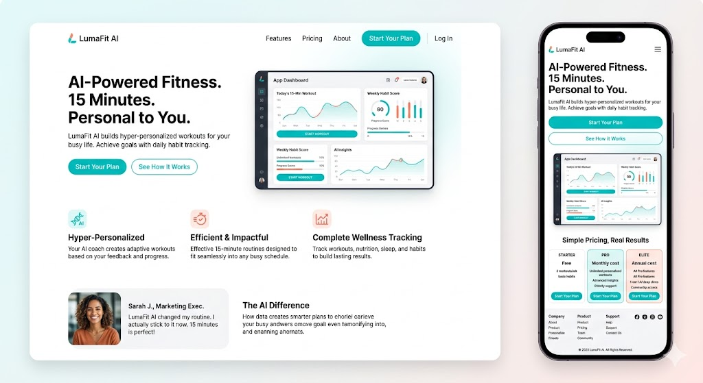
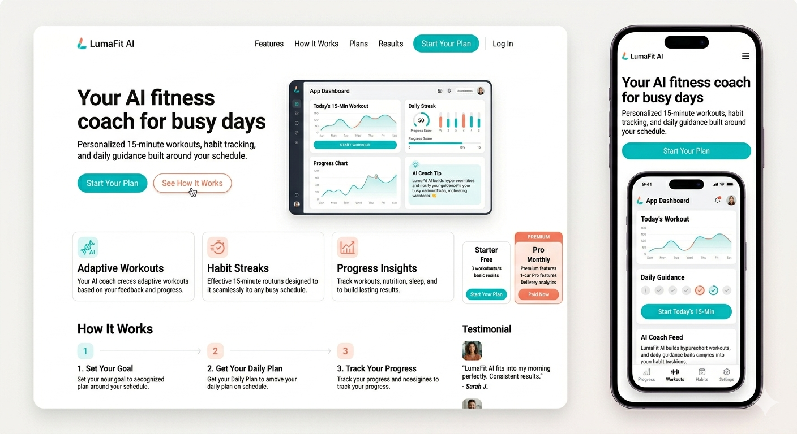
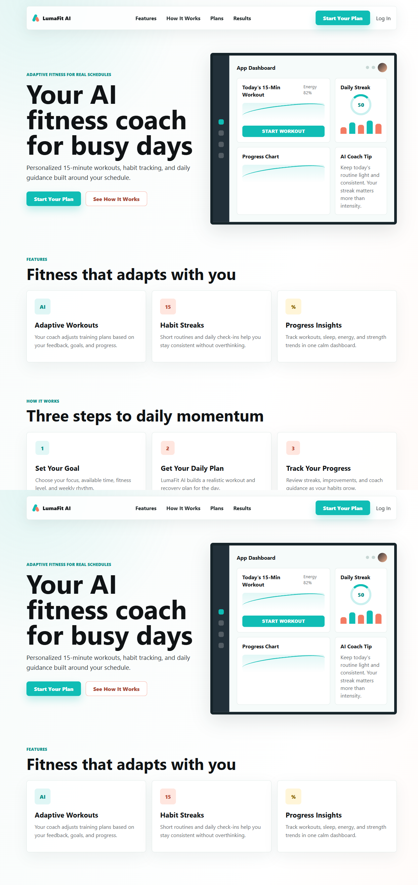
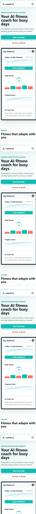

LumaFit AI
Project Title and Concept
LumaFit AI is an AI-powered fitness coach designed for busy people. The product creates personalized 15-minute workouts, supports habit tracking, and gives simple daily coaching guidance based on the user's goals, schedule, and progress. The brand is clean, practical, and motivating, combining the visual language of a modern SaaS product with the energy of a fitness app.
NanoBanana Prompts and Screenshots
Prompt v1
Act as a senior UI/UX designer creating a modern landing page for a digital fitness product. Project name: LumaFit AI Concept: LumaFit AI is an AI-powered fitness coach for busy people. It creates personalized 15-minute workouts, tracks habits, and gives simple daily guidance. Create a complete website design with: - Hero section - Navigation menu - Main content sections - Clear call-to-action buttons - Pricing or plan section - Testimonials section - Footer - Mobile-responsive layout Visual style: - Clean, modern, energetic - Premium SaaS + fitness app feeling - White background with charcoal text - Accent colors: electric teal and warm coral - Rounded but professional UI - Realistic app dashboard preview in the hero section - Fitness, progress, habit tracking, and AI personalization should be visually clear Layout requirements: - Desktop website screenshot - Mobile website screenshot - Clear hierarchy - Readable text - Strong CTA: "Start Your Plan" - Secondary CTA: "See How It Works" Avoid: - Generic stock photo look - Overly dark design - Too many gradients - Cluttered layout - Illegible small text Output a polished website mockup suitable for development reference.

Prompt v2
Act as a senior product designer and brand designer. Improve the previous LumaFit AI website design into a more polished, production-ready responsive landing page. Design goal: Create a cohesive website for "LumaFit AI", an AI fitness coach that helps busy people build consistent fitness habits with 15-minute personalized workouts. Brand direction: - Confident, motivating, clean, and practical - Not a bodybuilding brand - Not a generic gym website - Should feel like a smart health-tech product Desktop layout: 1. Top navigation: Logo: LumaFit AI Links: Features, How It Works, Plans, Results CTA button: Start Your Plan 2. Hero section: Headline: "Your AI fitness coach for busy days" Supporting text: "Personalized 15-minute workouts, habit tracking, and daily guidance built around your schedule." Primary button: Start Your Plan Secondary button: See How It Works Include a realistic mobile app/dashboard preview showing workout plan, streak, progress chart, and AI coach tip. 3. Feature section: Three clear feature blocks: - Adaptive workouts - Habit streaks - Progress insights 4. How it works: Three simple steps: - Set your goal - Get your daily plan - Track your progress 5. Pricing section: Two plan cards: Starter and Pro 6. Testimonial section: Use realistic short user quotes 7. Footer: Logo, navigation links, social links, copyright Mobile layout: - Create a separate mobile version - Single-column layout - Sticky-feeling top nav or compact header - Large readable CTA - App preview should fit without overlapping text - No text should be cropped Visual constraints: - Use mostly white and light neutral backgrounds - Use charcoal for text - Use electric teal and warm coral as accents - Use subtle shadows only - Avoid purple/blue gradient dominance - Avoid decorative blobs or meaningless abstract shapes - Keep cards clean with small border radius - Use consistent spacing and alignment Output: Show both desktop and mobile website mockups. Make the design clean enough that a developer can recreate it accurately.

The second iteration improved the result through stronger role prompting, exact structure, CTA labels, mobile requirements, constraint-based instructions, and style conditioning.
dev0 Website Generation
Create a responsive landing page website for a product called LumaFit AI. Use the attached NanoBanana design as the visual reference. Product concept: LumaFit AI is an AI-powered fitness coach for busy people. It creates personalized 15-minute workouts, habit streaks, and daily progress guidance. Build requirements: - Create a functional responsive website. - Use clean semantic HTML, CSS, and minimal JavaScript. - The first screen should be the real landing page, not a marketing explanation page. - Recreate the design direction from the reference: white/light background, charcoal text, electric teal primary CTA, warm coral secondary accents, clean cards, subtle shadows, and a realistic app dashboard preview. - Make the layout polished on desktop and mobile. - Include navigation links: Features, How It Works, Plans, Results. - Include CTA buttons: "Start Your Plan" and "See How It Works". - Include hero, features, how it works, pricing, results/testimonial, and footer sections. Responsive requirements: - On mobile, use a compact header and single-column content. - Ensure all text remains readable. - Ensure no dashboard, card, button, or heading overlaps. - CTA buttons should be easy to tap. Repository requirements: - Add source code. - Add README.md with project overview, concept, structure, and run instructions. - Add resources.md with placeholders for YouTube video link, project image links, Suno audio link, external assets, and GitHub repository link. - Keep the project clean and easy to push to GitHub. After generation: - Connect the project to my GitHub repository. - Push the completed code to GitHub.
What worked well: structured section-by-section instructions made the website easier to generate and kept the output aligned with the design. Main issues were mobile spacing and preventing generic decorative AI styling. Prompt adjustments improved the result by specifying exact constraints such as small border radii, consistent CTA buttons, and no text overlap.


GitHub Repository
Repository link: TODO - add after connecting dev0/GitHub and pushing the project.
Repository structure screenshot: TODO - add screenshot.
resources.md screenshot: TODO - add screenshot.
VEO3 Promo Video
Create an 8-second promotional video for LumaFit AI. Brand: LumaFit AI is an AI-powered fitness coach for busy people. It creates personalized 15-minute workouts, habit streaks, and daily progress guidance. Visual style: Clean health-tech SaaS, bright white environment, charcoal text, electric teal and warm coral accents, modern app UI, energetic but not aggressive fitness mood. Video structure: 0-2 seconds: Show a busy professional opening the LumaFit AI app on a phone. On-screen text: "LumaFit AI" 2-5 seconds: Show the app generating a personalized 15-minute workout plan with a progress chart, habit streak, and AI coach tip. Smooth UI animation, teal highlights, warm coral accents. 5-8 seconds: Show the person starting a short workout confidently. End card with brand name and call to action: "Start Your Plan" Constraints: - Maximum 8 seconds. - No cluttered text. - Keep the style consistent with a clean fitness SaaS website. - Use realistic lighting and polished product-ad visuals. - Make the brand name and CTA clearly readable.
YouTube video link: TODO - add after uploading the VEO3 video.
Suno Promo Sound
Create a short promotional music track for LumaFit AI, an AI fitness coach for busy people. Style: Modern upbeat electronic pop with light percussion, clean synth pulses, and a motivational but not aggressive tone. Mood: Fresh, focused, energetic, optimistic, health-tech. Length: Short promo-friendly audio suitable for an 8-second video. Brand fit: The sound should match a clean white fitness app website with electric teal and warm coral accents. It should feel like a smart morning workout routine, not a heavy gym commercial. Avoid: Dark trap, intense rock, dramatic cinematic music, or vocals that distract from a short product ad.
Suno audio link: TODO - add after generating the audio.
Reflection
The most effective prompt techniques were role prompting, structured formatting, and constraint-based instructions. Role prompting helped define the expected quality level by asking the AI to act as a senior UI/UX designer, product designer, or brand designer. Structured formatting was especially useful because it broke the website into clear sections: navigation, hero, features, how it works, pricing, testimonials, and footer. This reduced ambiguity and made the output easier to evaluate. Constraint-based instructions also worked well because they controlled visual direction, colors, responsive layout, and common AI design problems such as clutter, unreadable text, and excessive gradients.
Wording changes had a strong effect on the results. The first NanoBanana prompt described the product and general design requirements, but the result was still broad. The second prompt used more exact content, section order, mobile requirements, and avoid-list constraints. This made the design feel more intentional and easier to use as a development reference. Similarly, the dev0 refinement prompt focused on concrete problems such as mobile spacing, CTA consistency, and repository structure instead of asking for a vague improvement.
AI struggled most with precision and consistency. It can create attractive visual concepts quickly, but it may invent strange microcopy, crop text, or create UI elements that look good as an image but are not easy to build responsively. Another limitation is that AI-generated design often needs human direction to keep the brand from becoming generic. Without constraints, the output can look like a typical template rather than a specific product.
The biggest workflow limitation is that each tool handles only one part of the production process. NanoBanana is useful for visual direction, dev0 is useful for code generation, VEO3 is useful for video, and Suno is useful for audio, but the human director still needs to connect everything, check consistency, organize files, upload resources, and document the process. GitHub also remains important because it creates a professional structure and makes the project reproducible.
I would use this AI workflow in a real project for early concept development, landing page drafts, quick promo assets, and rapid brand testing. However, I would not treat AI output as final without review. A real project would still need manual quality control, accessibility checks, responsive testing, performance review, and clearer product validation. AI is very effective as a creative and technical assistant, but the final direction, quality standards, and decisions still need to come from the human creator.